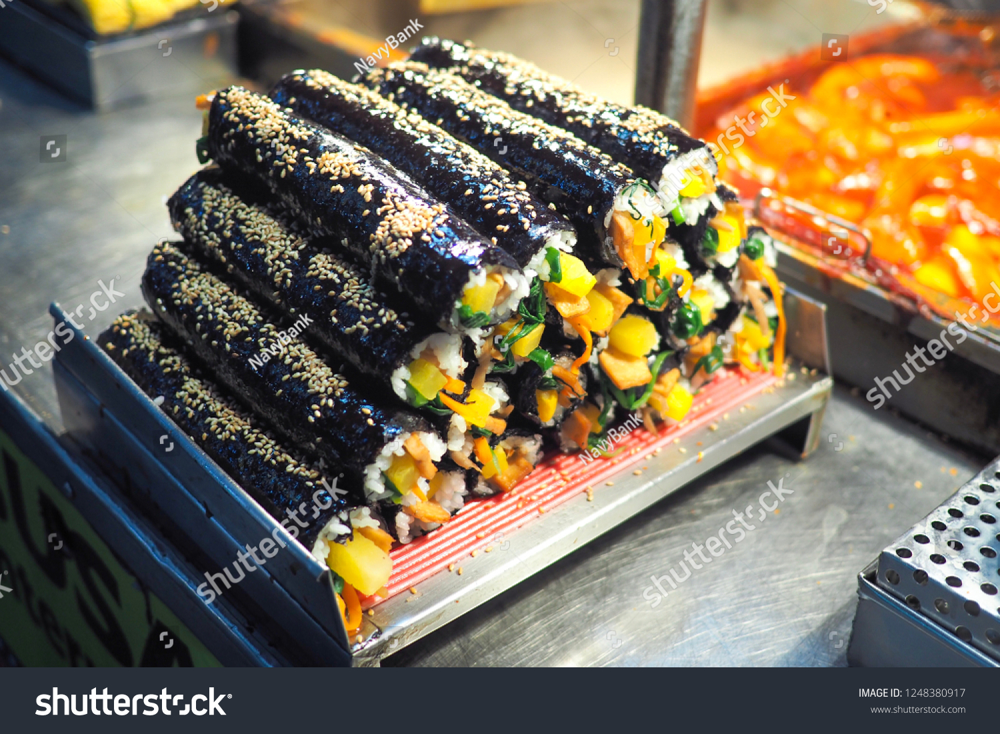

Gimbab

Ingredients
Basically, gimbap is a seaweed rice roll made of gim (a sheet of dried seaweed) and bap (rice). So as long as you can roll some rice in gim
- 5 sheets of gim (seaweed paper), roasted slightly
- 4 cups cooked rice (the recipe is here, but make with 2 cups of short grain rice instead of 1 cup)
- ½ pound beef skirt steak (or tenderloin, or ground beef)
- ½ pound beef skirt steak (or tenderloin, or ground beef)
- 1 large carrot, cut into matchsticks (about 1½ cup)
- 5 strips of yellow pickled radish (use pre-cut danmuji or cut into 8 inch long strips)
- 8 to 10 ounces spinach (1 small bunch), blanched, rinsed in cold water, and strained
- 3 eggs
3 garlic cloves
2 teaspoons soy sauce